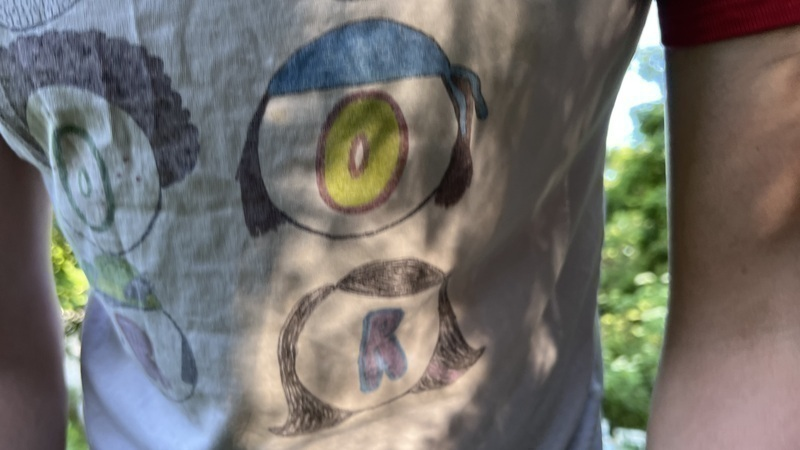
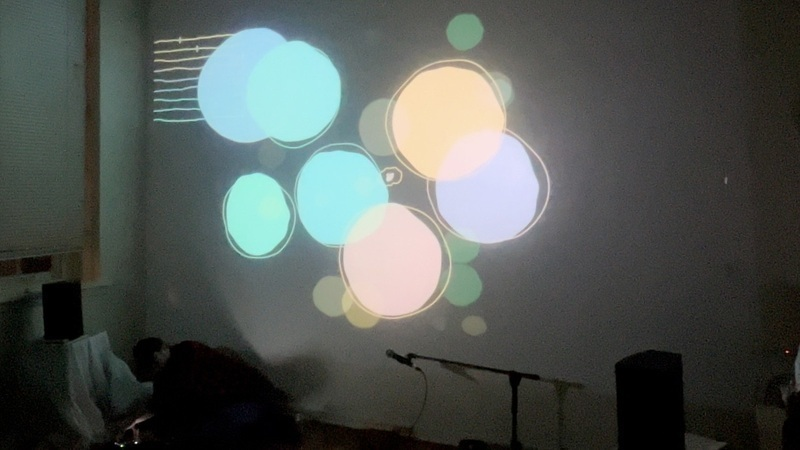

log

or

I will be here ten days from today, and you should come

a child holds a lizard on his finger

seashells

summer

J†Johnson did some really great hand gestures during their delightful flat imagination workshop at The Perch last week

you are cordially invited to join Creative Becoming and me for what is sure to be a memorable event at Emerald Wildflower Garden + The Perch Music / Arts Workshop on the 2nd of May, 2025 🚲

feeling nostalgic for the theatre of the flat imagination today – here's a picture of the wonderful Zack Scholl performing there about a year ago
here's the code for the strudel example for tomorrow's code sonnets workshop.
$: n("<[0,6] [2,8] [0,7] [0,9]>")
.scale("[C:major A2:minor D:dorian G:mixolydian]/4")
.sound("sawtooth")
.lpf(tri.range(600,900).slow(16))
.adsr(".2:.2:1:.4")
$: n("0 2 4 <[6,8] [7,9]>")
.scale("[C:major A2:minor D:dorian G:mixolydian]/8")
.sound("piano")
.cpm(60)
$: sound("bd [rim <bd rim>]").bank("RolandTR707").delay(.5)
$: sound("<numbers:1 numbers:2 numbers:3 numbers:4>")
.pan("<0 0.3 .6 1>")
.slow(2).lpf(tri.range(600,4000)
.slow(12)).delay("0.8:.5:1.5")
williamthazard [at] pm.me